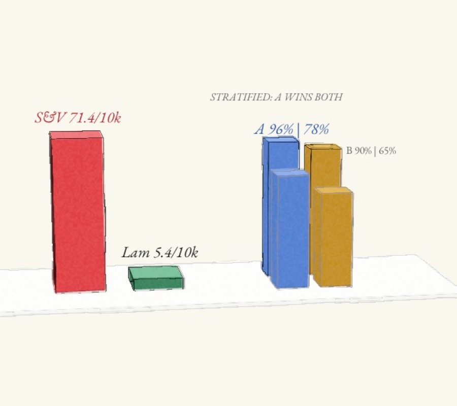

No. 03explorer
Echo chambers, sampling & provenance
collapsing duplicate echoes and bot floods to primary N_eff
No. 04explorer
Confounders, John Snow & Simpson’s paradox
1854 South London water rates and severity stratification